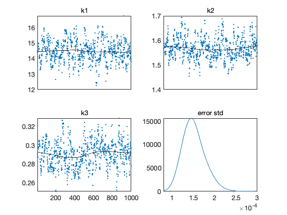
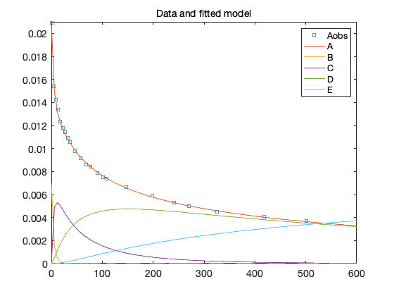

MCMC toolbox » Examples » Himmelblau
Himmelblau exercise 9.9
This is exercise 9.9 from David M. Himmelblau, Process Analysis by Statistical Methods, Wiley, 1970.
We model the reactions
A + B (k1)-> C + F A + C (k2)-> D + F A + D (k3)-> E + F
The derivatives can be written as
dA/dt = -k1 AB - k2 AC - k3 AD dB/dt = -k1 AB dC/dt = k1 AB - k2 AC dD/dt = k2 AC - k3 AD dE/dt = k3 AD
The system is written in file himmelode.m and the sum of squares function in himmelss.m.
clear model data parama options data.ydata = [ % Time (min) [A] (mole/liter) 0 0.02090 4.50 0.01540 8.67 0.01422 12.67 0.01335 17.75 0.01232 22.67 0.01181 27.08 0.01139 32.00 0.01092 36.00 0.01054 46.33 0.00978 57.00 0.009157 69.00 0.008594 76.75 0.008395 90.00 0.007891 102.00 0.007510 108.00 0.007370 147.92 0.006646 198.00 0.005883 241.75 0.005322 270.25 0.004960 326.25 0.004518 418.00 0.004075 501.00 0.003715 ];
Initial concentrations are saved in data to be used in sum of squares function.
A0 = 0.02090; B0 = A0/3; C0 = 0; D0 = 0; E0 = 0; data.y0 = [A0;B0;C0;D0;E0];
Refine the first guess for the parameters with fminseacrh and calculate residual variance as an estimate of the model error variance.
k00 = [15,1.5,0.3]'; [k0,ss0] = fminsearch(@himmelss,k00,[],data) mse = ss0/(length(data.ydata)-4);
k0 =
14.402
1.5663
0.29042
ss0 =
4.1564e-07
params = {
{'k1', k0(1), 0}
{'k2', k0(2), 0}
{'k3', k0(3), 0}
};
model.ssfun = @himmelss;
model.sigma2 = mse;
options.nsimu = 1000;
options.updatesigma = 1;
[results,chain,s2chain] = mcmcrun(model,data,params,options);
Sampling these parameters: name start [min,max] N(mu,s^2) k1: 14.4019 [0,Inf] N(0,Inf) k2: 1.5663 [0,Inf] N(0,Inf) k3: 0.290424 [0,Inf] N(0,Inf)
figure(1); clf mcmcplot(chain,[],results,'chainpanel') subplot(2,2,4) mcmcplot(sqrt(s2chain),[],[],'dens',2) title('error std')
Function chainstats lists some statistics, including the estimated Monte Carlo error of the estimates.
chainstats(chain,results)
MCMC statistics, nsimu = 1000
mean std MC_err tau geweke
---------------------------------------------------------------------
k1 14.415 0.67092 0.053086 9.598 0.98736
k2 1.5668 0.039761 0.0039085 11.468 0.99983
k3 0.29106 0.012697 0.0012202 13.761 0.99665
---------------------------------------------------------------------
figure(2); clf [t,y] = ode45(@himmelode,linspace(0,600),data.y0,[],mean(chain)); plot(data.ydata(:,1),data.ydata(:,2),'s',t,y,'-') ylim([0,0.021]) legend({'Aobs','A','B','C','D','E'},'Location','best') title('Data and fitted model')